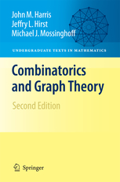

Combinatorics and Graph Theory
John M. Harris, Jeffry L. Hirst, and Michael J. Mossinghoff
Errata for Second Edition
(Springer, 2008)

If you spot an error in the text that does not appear on this list,
whether typographical, grammatical, or mathematical, please let us know.
Thanks!
- p. iv: The ISBN number is misprinted here.
The correct number appears on the back cover (978-0-387-79710-6).
- p. 17, exercise 10(b): "isomorphic" is misspelled.
- p. 21, exercise 6: add "Km,n
with m > 1 and n > 1" after
"complete bipartite graph".
- p. 50, line 1: should end with "deleting the first row of M".
- p. 50, line 3: replace "sum of the determinants" with
"sum of the squares of the determinants".
- p. 57, line 7: change C´ to C.
- p. 59, exercise 5: add "connected" before "graph".
- p. 64: in the proof of Theorem 1.24, the first and second observations
should be reversed, and the third observation follows directly from the
definition of the ci.
- p. 71: lines -5 and -4 should read:
"(since its detour order is 10), we would need to show that the graph had
(1,9)-, (2,8)-, (3,7)-, (4,6)-, and (5,5)-partitions."
- p. 80, exercise 10 of section 1.5.2 should read: "Find a 4-regular
planar graph with triangular regions, and prove that it is
unique."
- pp. 80-83: The discussion throughout section 1.5.3 assumes that the
polyhedra are convex, but this is not stated.
- p. 86, lines 13-14: The explanation that the graph in Figure 1.85 is
3-colorable should read:
"K(a) = K(c) = 1, K(b) =
K(d) = 2, K(e) = 3".
- p. 87, Exercise 1(e) and Figure 1.86: The actual
Birkhoff Diamond has one
more edge and a higher chromatic number than the graph shown.
- pp. 97-100: "colorings" should be "proper colorings"
in several locations: at the end of the first sentence of section 1.6.4, in
the first paragraph on p. 98, in the definition of
cG(k), and in the proof of Theorem 1.48.
- p. 108: exercise 4 of section 1.7.2 should read:
"Let Θ = {S1, S2, …,
Sr} be a family of distinct nonempty subsets of the set
{1, 2, …, n}, where n ≥ 2. If the
Si are all of cardinality n − 1, then prove
that there exists an SDR of Θ."
- p. 122, line −1: In the statement of Theorem 1.66, change
"n" to "p".
- p. 125: In the proof of Theorem 1.69, the proof of Claim A follows
directly from Theorem 1.68 by using G = Kn and H
= Tm.
- p. 125: Replace the last three sentences of the proof of Theorem 1.69
with the following:
"Let H be a subgraph of Gr that is
χ(Gr)-critical.
By part (d) of Exercise 6 in Section 1.6.1,
δ(H) ≥ χ(Gr) − 1 ≥
m − 1.
By Theorem 1.16, H contains Tm as a subgraph, and
therefore G has a red Tm."
- p. 137, exercise 12(c): Change "151155" to
"51155".
- p. 149, exercise 4 both parts: The summation limits should include "=n".
- p. 151, line −10: Change "six" to
"seven".
- p. 152, line 9 under Monotonic Subsequences:
The best we can do is length 4, because
(10, 9, 7, 4) is a decreasing subsequence of length 4.
- p. 159, line 19: Change the second "24" to "17".
- p. 162, exercise 4: Change "250" to "230" in the second
sentence.
- p. 165, eqn. (2.31): This list shows the arrangements assuming three
red beads, four green beads, and five blue beads, so the roles of g
and b have been reversed. So either interchange "blue"
and "green" here (and in ex. 2 on p. 166, which refers here), or
change rbbbbb to rggggg and gbbbbb to gggggb in
(2.31).
- p. 225, exercise 4: Replace "q0(n)"
with "the number of partitions of n into distinct odd
parts".
- p. 231, exercise 8: The n appearing as the upper limit in the
product on the right side should be n − 1.
- p. 246, line 3: The exponent on (1-x) should be n+1, not
m+1.
- p. 267, description of Step 3: In the third line, the expression
PkRk appearing on the right side of the
inequality should be RkSk.
- p. 273: In equation (2.139), the first "+" should be a
comma.
- p. 275, exercise 2: the last part should read "so that no subset
of five points forms the vertex set of a convex pentagon".
- p. 328, statement of Theorem 3.41: In item 1, "For every
S" should be "For every finite S".
- p. 335, third paragraph: The phrase "and the society
(J, W) has a unique solution" should be "and every
matching for the society (J, W(J)) is
bijective".
- p. 335, line −4: For the case α = β + 1,
append "+ 1" to the definition of q( f ).
Thanks to
Matthias Beck,
Tom Braden,
Robert Carlson,
Chuck Cusack,
Peter Hines,
James Lee,
Benjamin Levine,
Erik Lissel,
Mark Muldoon,
and Julian Wilson
for writing about corrections.
Jeff Hirst, et. al.
hirstjl at appstate dot edu
Last modified: February 7, 2022.